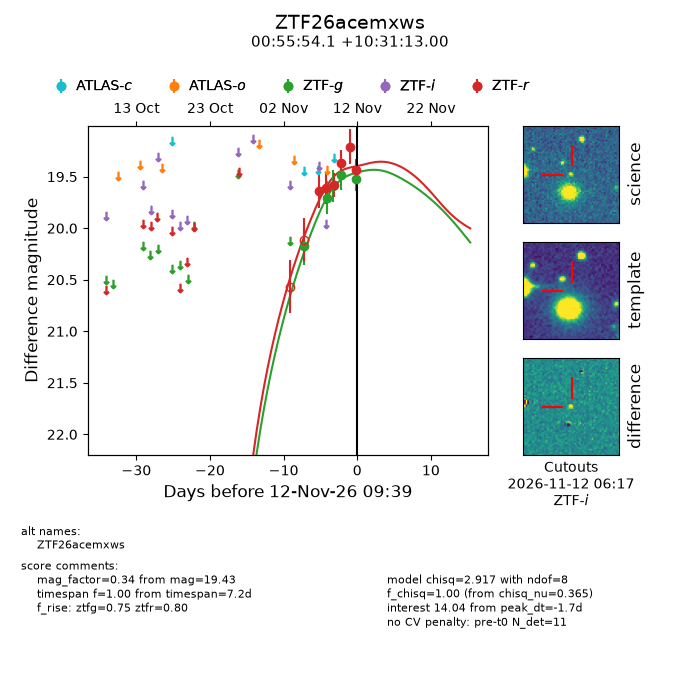
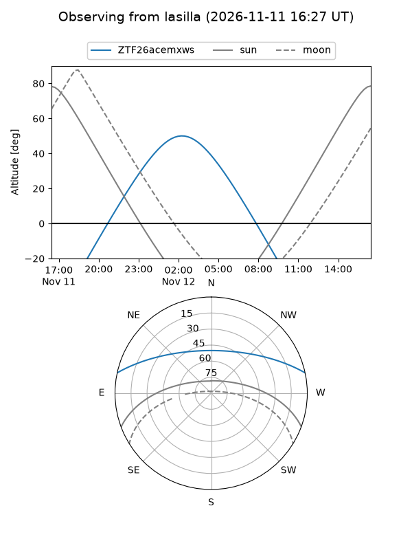
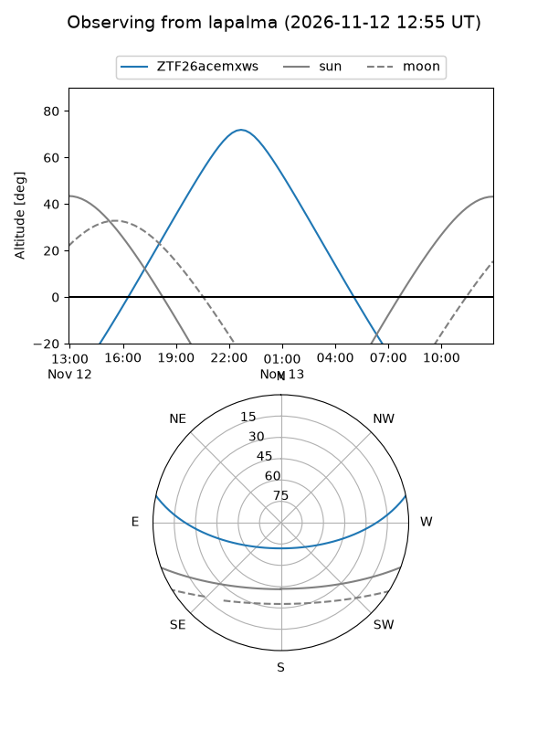
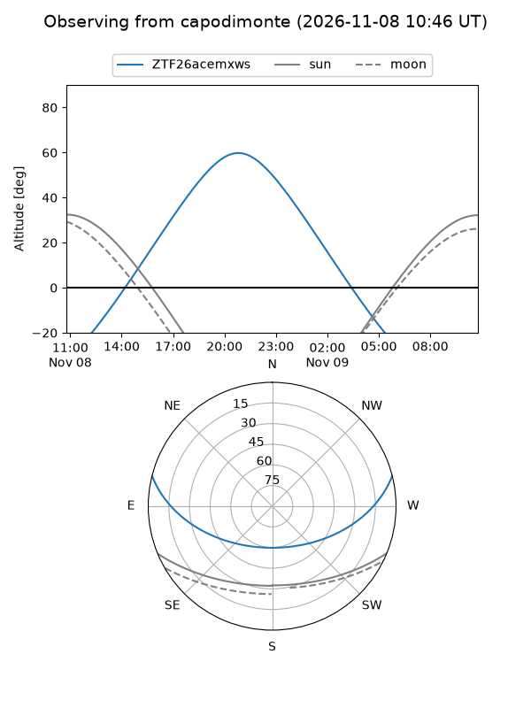
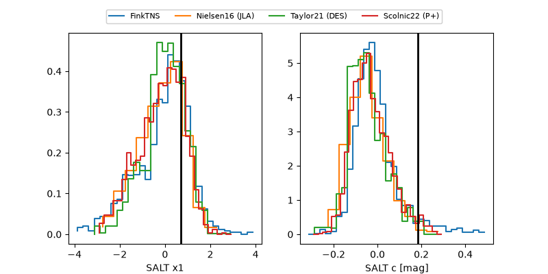

ZTF26acemxws
Target ZTF26acemxws at 2026-11-12 09:45
Aliases and brokers:
FINK-ZTF: ztf.fink-portal.org/ZTF26acemxws
Lasair-ZTF: lasair-ztf.lsst.ac.uk/objects/ZTF26acemxws
ALeRCE-ZTF: alerce.online/object/ZTF26acemxws
Direct TNS query: direct search
alt names
ZTF26acemxws (ztf,fink_ztf)
Coordinates:
equatorial (ra, dec) = 13.9753,+10.52028
equatorial (HMS+DMS) = 00:55:54.08,+10:31:13.00
galactic (l, b) = (124.7276,-52.33591)
Flags:
peak dt: -1.7
Photometry:
last ztfg=19.52, ztfr=19.43
5 ztfg, 6 ztfr detections
Lightcurve

Visibility



Additional plots
